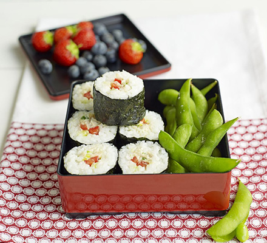

Mexican Cusine
From tacos and tortillas to spicy soups and stews, the food in Mexico is guaranteed to please crowds when you're entertaining.
See more

Japanese Cusine
The distinct dishes of Japan are healthy light and fresh- try out sushi, sashimi, noodles and miso.
See more
American Cusine
Get inspired by Stateside favourites, from burgers and hotdogs to pancakes and pies.
See more